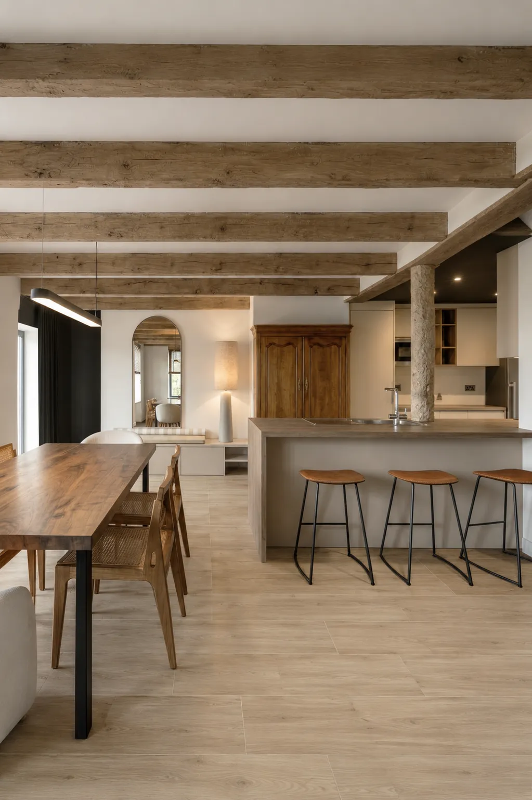
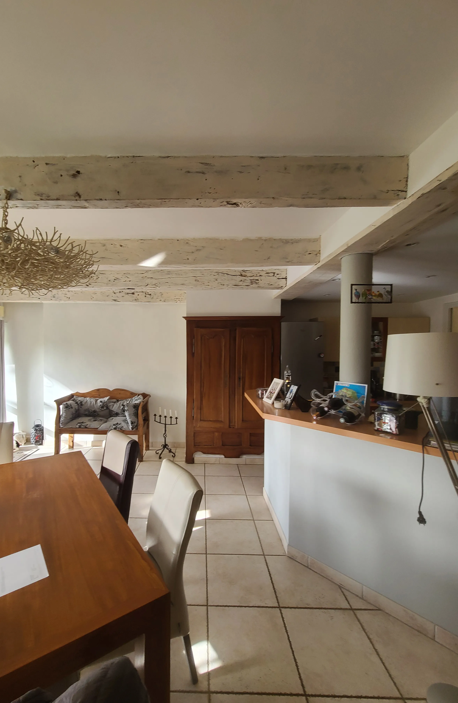

Vous souhaitez repenser votre maison, rénover votre appartement ou optimiser vos espaces en créant un intérieur qui vous ressemble vraiment ? Salle à manger, cuisine, salon, chambre, salle de bain.
Je conçois un projet global et cohérent en vous accompagnant de la première idée à la réalisation.
Du conseil déco au choix des matériaux, en passant par l'optimisation des volumes, les devis travaux et la gestion des démarches administratives (déclaration préalable, autorisations de travaux ...), je vous accompagne dans votre projet de rénovation intérieure et décoration sans jamais perdre de vue votre mode de vie, vos goûts, vos envies et votre budget.
Chaque projet est unique et sur-mesure : grâce à des plans d’aménagement 2D et des visuels 3D réalistes, visualisez fidèlement votre futur intérieur avant le lancement du chantier.
Et parce que chaque détail compte, je vous propose une sélection de mobilier professionnel haut de gamme, soigneusement sélectionné, livré directement chez vous.
Implanté à Redon, j'interviens plus largement dans le Morbihan et Loire-Atlantique notamment Vannes, Sarzeau, Muzillac et Guérande.




Vous avez une maison à réinventer, un appartement à repenser, un espace qui ne correspond plus tout à fait à votre manière de vivre.
Les idées sont là, les envies aussi.
Mais entre les contraintes techniques, les choix à faire et la peur de se tromper, le projet peut vite devenir flou.
Je conçois un projet global et structuré, pensé dans les moindres détails : circulation fluide, rangements intégrés, volumes équilibrés, atmosphères cohérentes. Rien n’est laissé au hasard, pensé pour votre quotidien
Grâce aux plans détaillés et aux visuels 3D, vous validez chaque choix avant les travaux.
Un intérieur qui vous ressemble vraiment, une vision claire à chaque étape, et un projet maîtrisé du premier croquis jusqu’à la livraison.

Vous achetez un bien à rénover. Ce peut être une résidence secondaire pour vous retrouver, recevoir, ralentir ou un lieu pensé pour être habité ponctuellement.
Vous voulez un lieu qui marque, qui se démarque, qui donne envie de revenir.
Je révèle le potentiel du bien, j’optimise les espaces, je travaille les ambiances, les matériaux et les usages pour créer une expérience cohérente, durable et désirable, pensée pour votre confort.
Si vous êtes à distance, je pilote l’ensemble du projet pour vous, de l’analyse initiale jusqu’à la livraison.
Un lieu unique, pensé pour être vécu autant que pour être valorisé, un projet maîtrisé dans ses coûts, et un bien qui se distingue immédiatement par sa qualité.

Je vous accompagne à chaque étape du projet : de la première visite jusqu’à la livraison, en passant par la conception, les démarches administratives, le choix des matériaux et le suivi des travaux.
Je structure, j’anticipe, je coordonne pour que vous puissiez avancer sereinement, avec une vision claire et des décisions assumées.
Chaque projet est conçu dans sa globalité et rien n’est laissé au hasard. Un projet maîtrisé dans les moindres détails… et surtout, la certitude d’un résultat fidèle à ce que vous avez imaginé.
Adaptées à vos besoins
Vous voulez un intérieur cohérent, abouti et qui a du caractère.
Je vous accompagne pour faire les bons choix dans la conception de votre projet.
- Plans d'aménagements optimisés
- Visuels 3d réalistes et immersifs
- Création d'une ambiance sur mesure
- Sélection des matériaux et couleurs
- Sélection de mobilier, luminaires et éléments décoratifs. Fourniture possible.
Structure de la phase travaux, sans pilotage de chantier.
Je vous accompagne sur place dans les RV artisans et la relecture des devis.
- Dessin de l'ensemble des plans détaillés
- Dossier technique complet
- Réunion pré-chantier sur place avec les artisans
- Relecture des devis et optimisation
Vous souhaitez déléguer et faire avancer votre projet sereinement
En complément de la mission conception + plans :
- Suivi des travaux
- Planning des travaux
- Coordination des intervenants
- Visites de chantier régulières
- Comptes rendus réguliers
Votre projet nécessite une autorisation administrative ?
Je constitue et dépose en mairie un dossier clair et conforme.
- Analyse des contraintes PLU
- Rédaction des plans nécessaires
- CERFA complété
- Accompagnement au dépôt en mairie
- Suivi et ajustement pour obtenir les autorisations rapidement


Nous avons fait appel à Mr Cousseau dans le cadre des démarches de notre projet locatif.
Nous sommes très satisfaits de sa prestation. Il aura été de bons conseils sur le projet, les visuels étaient très pro et nous ont permis de nous projeter facilement en terme d'aménagement et de décoration.
Il a suivi au plus près le dossier auprès du service urbanisme et à été très réactif quand il a fallu effectuer des modifications afin de faire en sorte que celui-ci aboutisse rapidement.
Je recommande vivement.

Nous avons fait appel à Alexandre pour le projet d’aménagement et de rénovation de notre maison, située sur la commune de Plescop.
Il a tout de suite compris le style que nous souhaitions et nous a proposé des plans et des visuels magnifiques, avec de très bonnes idées et conseils.
Bien que sa prestation soit terminée, il reste malgré tout à notre écoute en cas de besoin, et nous accompagne jusqu’au bout du projet. Maintenant, nous avons hâte que notre projet voie le jour.
Vous pouvez lui faire confiance les yeux fermés. Merci Alexandre !

Un grand merci à Alexandre pour son excellent travail sur notre projet de réagencement intérieur de notre maison.
Les idées d'aménagement et la qualité des visuels 3D nous ont permis de nous projeter à 100%.
Bravo et merci!